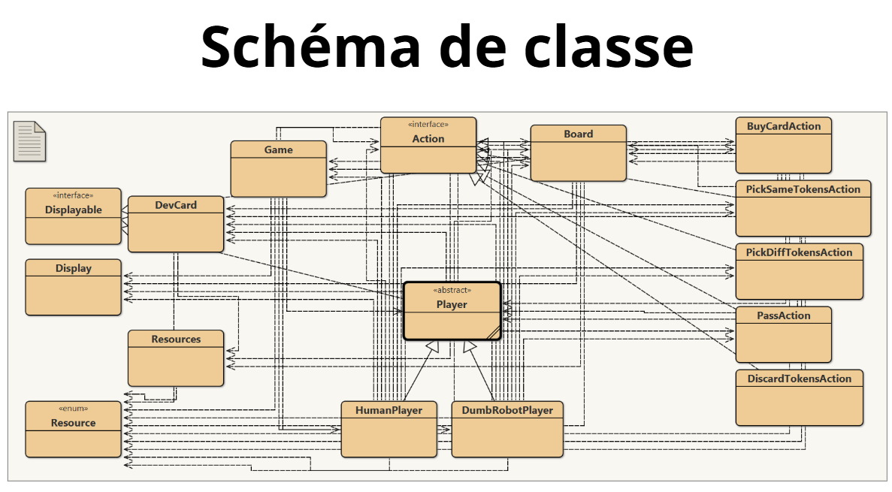
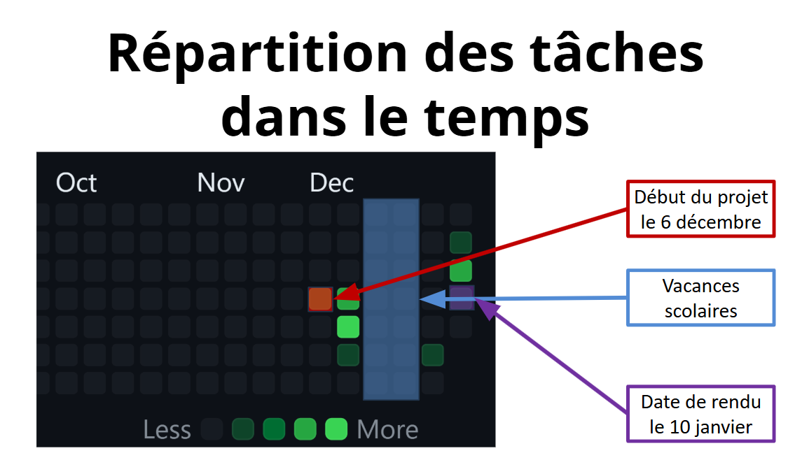
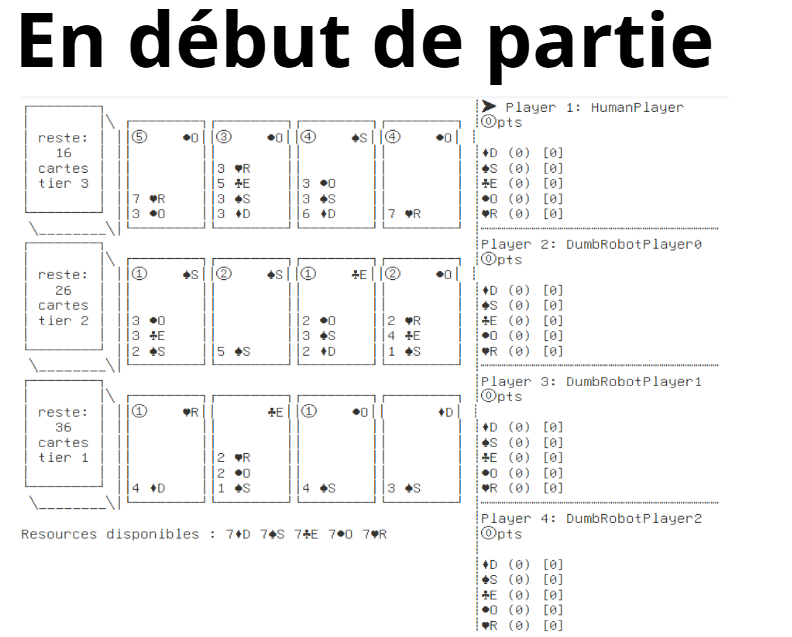
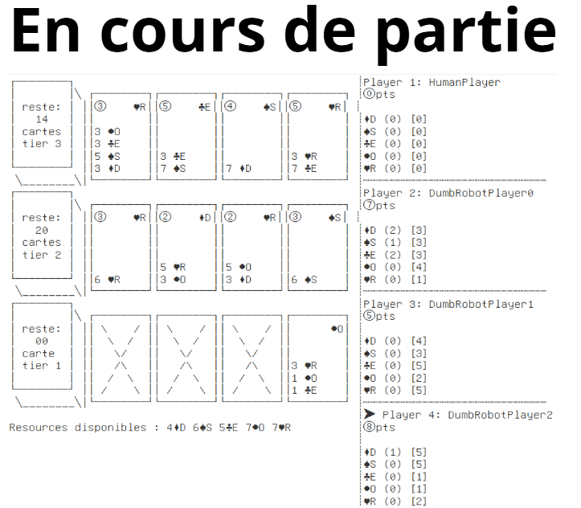

Projet Splendor
Implémentation complète du jeu de société Splendor en Java — projet de fin de 2ème année de Licence, réalisé en trio avec soutenance orale finale pour valider les acquis en programmation orientée objet.
Contexte
Ce projet a été réalisé en fin de 2ème année de Licence Mathématiques Informatique à l'UBS de Vannes, en équipe de trois. Il constituait le projet de validation des acquis en programmation Java, avec une soutenance orale finale devant un jury pour présenter les choix techniques et démontrer le fonctionnement du jeu.
L'objectif : implémenter le jeu de plateau Splendor en Java de A à Z — des règles du jeu jusqu'à l'interface CLI jouable, en passant par la gestion complète des états de partie.
Le jeu Splendor
Splendor est un jeu de stratégie où les joueurs collectent des jetons représentant des gemmes précieuses pour acheter des cartes de développement. Ces cartes permettent d'acquérir des cartes plus puissantes et d'attirer des nobles pour marquer des points de prestige. Le premier joueur à atteindre 15 points de prestige remporte la partie.
Ce que nous avons développé
- Modélisation complète des entités : joueurs, cartes (3 niveaux), jetons (5 gemmes + joker), nobles
- Gestion du plateau : piles par niveau, pioche, réservation des cartes
- Logique de jeu complète : collecte de jetons (règles de limite), achat de cartes, réservation, attraction des nobles
- Système de scoring et détection de fin de partie (15 pts, dernier tour complet)
- Interface en ligne de commande (CLI) lisible et jouable à 2–4 joueurs
- Gestion des tours et validation des actions illégales
Compétences validées
- Programmation orientée objet : héritage, encapsulation, polymorphisme, interfaces
- Conception d'architecture Java multi-classes et multi-packages
- Algorithmique : machine à états, boucle de jeu, gestion des cas limites
- Travail en équipe, répartition des tâches, versioning avec Git
- Communication technique : soutenance orale et défense des choix de conception
Aperçus du projet

Schéma de classes — architecture OOP

Répartition des tâches (Oct → Déc)

Interface CLI — début de partie

Interface CLI — partie en cours